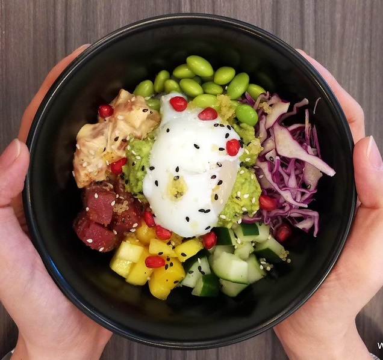

Recettes pour prendre du poids
Grâtin de tomates et gruyère
Facile à réaliser, le grâtin de tomates et gruyère est irrésistible. Réchauffant et économique pour les étés pluvieux de Lille.
Végétarien de surcroit ! Ce grâtin enchantera vos papilles, il n'attend que vous !

Burger au maroille
Les burgers sont bons, mais quoi de mieux pour fêter notre belle région qu'un burger avec son fromage fétiche ? Le maroille apportera une touche de bonheur supplémentaire dans votre assiette et dans votre vie...

Plat de charcuterie
Un indémodable pour les carnivores à l'approche de l'hiver, le plat de charcuterie est facile à préparer, mettez y tout ce qui vous fait envie !
Savourez cet instant dans les alpes Suisses...
Recettes pour perdre du poids

Tartines de saison aux figues et emmental
Un plaisir de fin d'été, le pétillant des figues s'allie avec la douceur du fromage et le moelleux du pain pour vous donner un apéritif d'une saveur inégalée !

Riz aux fines herbes et curry
Un petit voyage en Inde prévu ? Non ? Cette recette vous y emmène !
Laissez vous bercer par la musique des épices et savourez ce plat tout en légèreté pour le porte monnaie et la ligne...

Rôti aux légumes croquants
Moins végétarien mais tout aussi délicieux, le rôti aux légumes croquants est une entrée en fanfare dans le printemps !
Mettez le au four et oubliez le 45 minutes et vous aurez un repas diététique et délicieusement juteux.
Recettes de la Wild
Café ou thé du matin
Plus ou moins reveillé, le wilder est une espèce sociable qui affectionne les début de journée calmes avec une boisson chaude pour se préparer toute la journée.
Vous pourrez entendre au fond de la brousse quelque "LES JS DEBOUT" ainsi que les râles des wilders en retard, obligés de courir pour ne pas se faire hâcher.

Chocobons d'anniversaire
Ca devrait même être une loi, ramener des chocobons pour son anniversaire mettra du soleil sur les papilles et dans les coeurs de vos collèges, technique à ne pas négliger !

Bière traditionnelle de fin de journée
Passage régulier de la plupart des wilders, la bière de fin de journée est un moment de détente et de convivialité...
Ou de noyage dans l'alcool de github et de tous ses enfants.

Recette de mois
Evadez-vous à Hawai avec notre pokebowl !
Abonnez vous à la newsletter
Propose ta recette